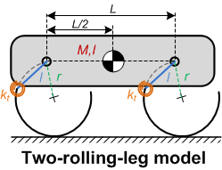
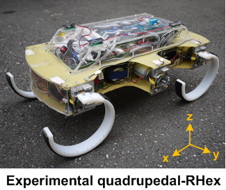
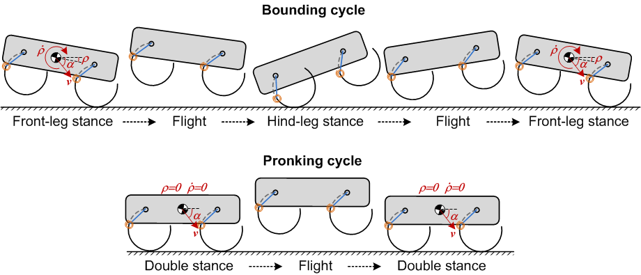
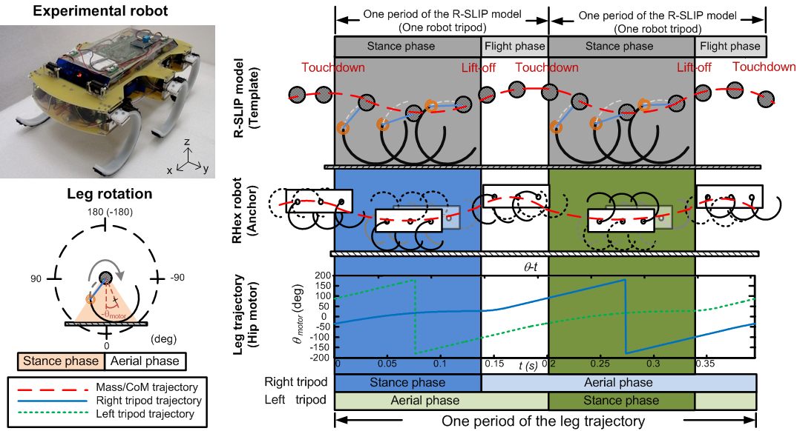
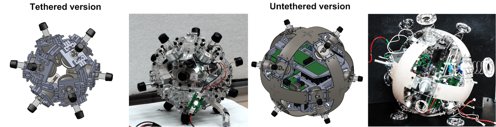
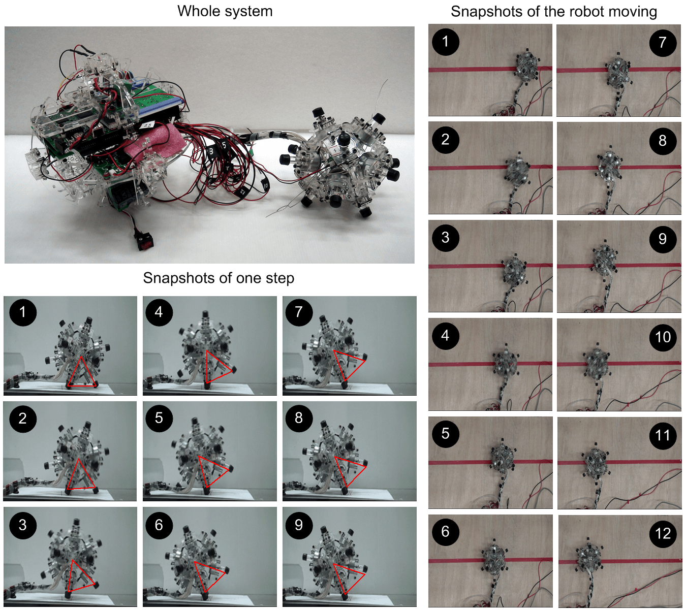
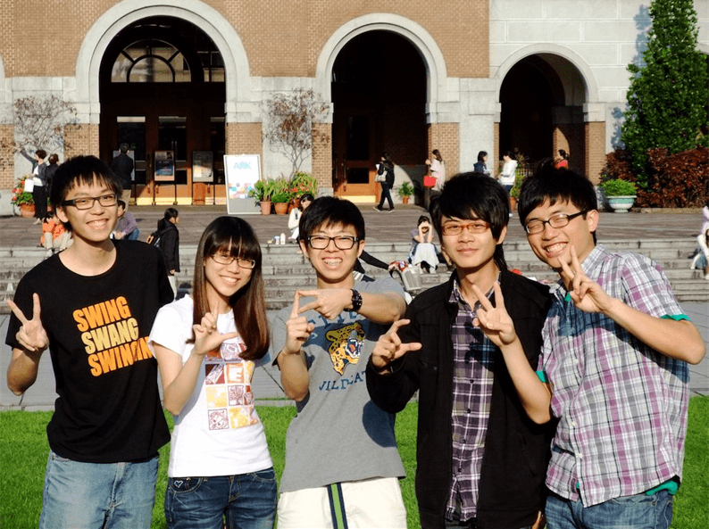

Overview
Two-rolling-leg (TRL) Model, Graduate research, 2014
 
| We developed the Two-rolling-leg (TRL) model, which is an low degree-of-freedom planar rigid-body model with two rolling legs. From the aspects of two common animal's gaits: bounding and pronking, the stability properties of the TRL model were investigated through non-dimensional steps-to-fall and Return map analyses. |

By embedding the TRL model as a“template", the empirical RHex-style robot can perform stable bounding and pronking locomotion with a simple open-loop control strategy and without any parameter tuning or optimization. This work confirms that the complex gait-level behavior of the robot can be initiated by adopting the simple reduced-order model as the template for behavioral guidance. |
-
Related publications
- C. K. Huang, C. J. Hu and P. C. Lin, "Gait-level Behavioral Analysis of a Sagittal Plane Model with Rolling Contact and its Role as a Template for Bounding and Pronking on a Quadruped Robot," The International Journal of Robotics Research. (In review)
Rolling-SLIP (R-SLIP) Model, Graduate research, 2013

The Rolling-SLIP (R-SLIP) model is a low degree-of-freedom planar model for running with rolling contact and varying-stiffness, which the characteristics of the R-SLIP model differ
from the well-known SLIP model with fixed stiffness and ground contact points. Through dimensionless steps-to-fall and return
map analysis, the stability property of the R-SLIP model can be revealed. |

The R-SLIP model is embedded as the reduced-order “template” in a more complex “anchor,” the RHex-style robot, via various mapping definitions between the template and the anchor. By deploying the stable running gaits of the R-SLIP model on the empirical robot with simple open-loop control strategy, the robot can easily initiate its dynamic running behaviors with flight phases. |
-
R-SLIP-model-based tripod running
-
Related publications
- K. J. Huang*, C. K. Huang*, and P. C. Lin, "A simple running model with rolling contact and its role as a template for dynamic locomotion on a hexapod robot," Bioinspiration and Biomimetics, vol. 9, p. 046004, 2014. (*These two authurs contributed equally) [PDF]
- C. K. Huang, K. J. Huang, and P. C. Lin, "Rolling SLIP model based running on a hexapod robot," in IEEE International Conference on Intelligent Robotics and Systems (IROS). Tokyo, Japan, 2013, pp. 5608-5614. [PDF]
|
Chichken Head Project, Introduction to Robotics, Dept. ME, 2012
Inspired from chicken's self-stabilizing head, we developed a 2-DoF robot arm to keep track of a point by utilizing sensory feedback, including camera and IMU. |

The system was controlled based on LabVIEW codes, which governed the motion of the robot arm (i.e.,
inverse kinematics and trajectory planning), and processed the sensory data, including IMU and camera. |

-
Related videos
-
Control strategy simulation under MATLAB
-
Sensory information test (IMU & camera)
-
Others
-
Final report (in Chinese) → [PDF]
|
Spherical Robot, College student research project, 2011

We developed a omnidirectional spherical robot, including the design process, mechatronics, gait development and programming. The robot has 12 symmetrically-mounted solenoids with actuation in the radial directions. By digitally actuating the solenoids, the robot is capable of moving toward desired direction. This design overcame the major drawback of traditional spherical robots, which cannot maneuver dexterously or go across uneven ground. |


-
This project won 2012 College Student Research Creativity Award
-
Final report (in Chinese) → [PDF]
|
|